3.1 - 准备工作
由于 Virtual Box 性能堪忧，我使用 VMWork Workstation 16 作为虚拟机容器，故本节跳过。
3.2 - Linux 操作系统平台
常规路线
首先下载并安装好 firstrun.deb，然后在桌面上任意位置右键点击，选择 Open Terminal Here：
在打开的新窗口中输入 /gettips 并回车，可以看到输出了一条路径：
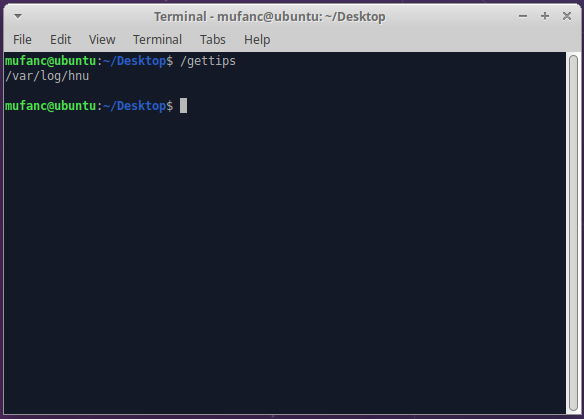
关于「命令」
这条命令的意思是执行根目录（/）下的 gettips 文件，不得不提的一点是：文件的所谓「格式」与它的扩展名并没有直接关系，扩展名只是作为标识文件格式的一种辅助手段，真正的「格式」只与文件内容有关。
观察终端，它的每一步操作都能大致分为几个部分：
无论何种系统，提示符大都包含当前的工作路径信息，比如上图中的 ~/Desktop，波浪号 ~ 表示当前用户的主目录，对于 root 用户为 /root，而对于一般用户而言则是 /home/<username>，我们可以使用 pwd 命令查看当前所在完整路径：
命令由用户输入，每一条命令的本质都是在运行一个可执行文件（其实并不一定，此处只是为了简化叙述）。命令后边可以跟参数，命令与参数、参数与参数之间以空格隔开，需要运行的可执行文件可以由绝对路径（比如此处的 /gettips）、相对路径指定，或是系统自动从 PATH 环境变量的内容搜索得到
下面给出一个使用相对路径执行的例子：
当前目录为 /proc，两个点 .. 代表上一级目录，在这里是根目录 /，后面跟 gettips 表示执行上一级目录下的 gettips 文件
一个更复杂的例子：
使用 pwd 命令查得当前所在目录为 /home/mufanc，此时 .. 代表上级目录 /home，../.. 则代表根目录 /
最后给出一个使用 PATH 环境变量的例子：
可以看到执行第一条命令时找不到 gettips 而报错，第二条命令将根目录 / 加入到了环境变量 PATH 中，第三条命令再次执行 gettips 时，成功获得了输出
大多数命令都会提供回显，也即该可执行文件的标准输出（stdout）或标准错误（stderr）信息，一般用于显示命令的执行结果或错误信息
使用 cd 命令进入刚才得到的目录，报错提示权限不足，于是先使用 sudo su 命令，提示符由 $ 变为 #，表示已经切换到 root 用户，再次执行 cd 即可：
关于「权限」
在 Linux 中，每个文件和目录均有一个所有用户（user）和一个属组（group），基本的 UGO-RWX 权限模型定义了不同身份的用户能对这个文件做什么样的事情：
身份
操作
user（本地）｜group（用户组）｜other（其它）
read（读）｜write（写）｜execute（执行）
权限
允许的操作
R
读取此文件的内容
W
向此文件写入数据
X
将此文件作为可执行文件执行
权限
允许的操作
R
列出此目录下的文件
W
在此目录下增加/删除文件
X
允许 cd 到此目录，或通过 stat 查看目录本身的信息
可以使用 stat 命令查看一个文件或目录的所有者和权限信息：
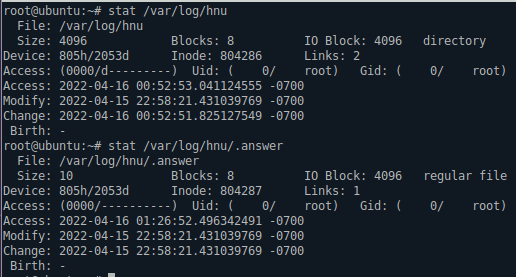
可以简单地将某一文件或目录的权限信息用 10 个字符表示，例如：
d 表示这是一个目录，其所有者权限为 rwx，组权限为 r-x，其它用户没有任何权限
这是一个文件，其所有者和组均可读写，其余用户只读
特别地，即使某一文件或目录并未对 root 用户授权，root 用户仍具有访问或修改它的权限
我们还可以使用 chown chgrp 命令修改一个文件/目录的所有者或组，使用 chmod 命令修改其权限
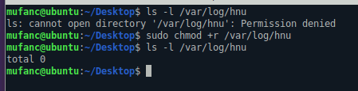
这里 chmod +r /var/log/hnu 指赋予所有用户对这个目录的读权限，然后再次使用 ls，即可成功列出该目录下的文件。
注意 chmod 命令本身也需要一定的权限才能执行成功，但它们超出了本文的范围，这里就不再赘述
现在执行 ls 命令，可以查看当前目录下有哪些文件。添加选项 -l，可以查看每个文件的详细权限和所有者信息；添加选项 -la，可以在此基础上显示隐藏文件（文件名以 . 开头的文件），其中前两项蓝色的 . 和 .. 分别表示当前目录（/var/log/hnu）和上级目录（/var/log）。选项 l 和 a 的顺序在这里并不重要，ls -la 和 ls -al 得到的是相同的结果
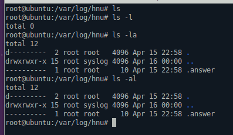
也可以使用指定路径的版本 ls -la /var/log/hnu，ls 命令默认会列出当前路径下的文件，添加路径后可以直接指定需要列出的目录，使用绝对路径和相对路径均可：
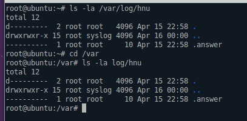
接着使用 cat 命令将 .answer 文件的内容打到终端上：
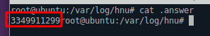
隐约记得实验用这台 Linux 没有默认安装 curl，通过 apt install curl 安装一下即可。
最后来玩点花活，不必记住 .answer 文件的内容，我们可以直接将 cat 命令嵌入到 curl 中：
1 curl "132.232.98.70:6363/check?id=************&v=$(cat .answer)"
1 2 3 4 5 6 7 8 9 10 11 12 13 14 #include <cstdio> int main () char path[1024 ]; long x; printf ("input the file path: " ); scanf ("%s" , path); FILE* fp = fopen (path, "r" ); fscanf (fp, "%ld" , &x); fclose (fp); printf ("%lX" , x); return 0 ; }
邪道速通
以上所有的实验内容都是在安装这个 firstrun.deb 之后开始的，包括 .answer 文件里面那串「神秘数字」，也一定是由这个 deb 在安装时生成的，那么我们何不直接把这个 deb 拆了，看看里面都有些什么：
1 dpkg-deb -x firstrun.deb ./tmp
拆解之后发现内容非常简单，只有一个 firstrun.py
1 2 3 4 5 6 7 8 9 . ├── firstrun.deb └── tmp └── usr └── local └── bin └── firstrun.py 4 directories, 2 files
来看看这个 py 文件里都写了些什么东西：
1 2 3 4 5 6 7 8 9 10 11 12 13 14 15 16 17 18 19 20 21 22 23 24 25 26 27 28 29 30 31 32 33 34 35 36 37 38 39 40 41 42 import osimport timeimport statgettips = '''#!/usr/bin/python3 import getpass if getpass.getuser() == "root": print("This command cannot run by root\\n") else: print("ffffffff\\n") ''' dirs = ["/home/hnu/" ,"/usr/bin/" ,"/opt/" ,"/var/log/" ,"/mnt/" ,"/etc/" ]; subdir = ["csee" ,"hnu" ,"yuelu" ,"tianma" ,"fenghuang" ]; filename=[".puzzle.txt" ,".game.txt" ,".answer" ] t = int (time.time()) v = t*t; d = dirs[v%6 ] v = v*t d = d+subdir[v%5 ] if not os.path.exists(d): os.makedirs(d) t = 5000000000 -t path = os.path.join(d,filename[t%3 ]); file = open (path,"w" ) file.write(str (t)) file.close() os.chmod(d,0 ); os.chmod(path,0 ); gettips = gettips.replace("ffffffff" ,d) file1 = open ("/gettips" ,"w" ); file1.write(gettips); file1.close() os.chmod("/gettips" ,stat.S_IXUSR|stat.S_IXOTH|stat.S_IXGRP|stat.S_IROTH);
根据当前时间，随机选取路径和文件名的组合生成谜题，不难发现用 50 亿减去时间戳就是最终的答案，于是我们可以直接构造出最终答案，再把拼凑好字符串粘贴到浏览器地址栏中：
3.3 - Linux 平台串口数据接收
常规路线
前置任务：按学习通 3.3.1 节的描述将 .hex 文件下载到单片机上，并测得 UART 串口的波特率
由于学习通上所谓「不完整的参考示例」实际上几乎不能用，所以我选择直接重写一遍，并将串口的发送和接收过程做了简单地封装，以便之后的实验使用。
在开始编写代码之前，首先需要了解关于 Linux 中「设备」和「文件」的几个基本概念。秉持着「一切皆文件」的设计理念，Linux 中的目录、字符设备、块设备、套接字、管道等东西都可以被映射为文件系统中的一个文件
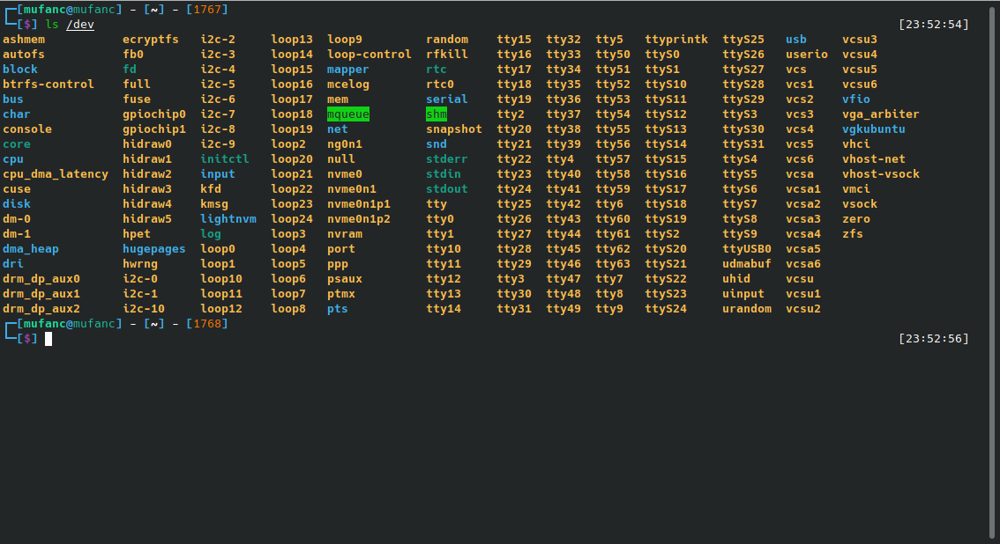
这样做最明显的好处是，开发者只需要使用一套 API 即可调取系统中大部分的资源，例如读文件、管道、系统参数、套接字等操作都可以使用 read 调用来完成；而相应的写操作比如修改文件、系统参数、发送串口数据等都可以通过 write 调用来进行
Linux 系统向上暴露了许多接口，允许我们通过接口来操作更加底层的硬件和设备，又有大佬将这些接口封装成了各种各样的库，这样一来我们就能很方便的调用系统资源了。查阅相关文档（这里力荐 https://man7.org/ ，内容非常丰富），编写工具类代码 serial.cpp 和 serial.h：
serial.cpp 1 2 3 4 5 6 7 8 9 10 11 12 13 14 15 16 17 18 19 20 21 22 23 24 25 26 27 28 29 30 31 32 33 34 35 36 37 38 39 40 41 42 43 44 45 46 47 48 49 50 51 52 53 54 55 56 57 58 59 60 61 62 63 64 65 66 67 68 69 70 71 72 73 74 75 76 77 78 79 80 81 82 83 84 85 86 87 88 89 90 91 92 93 94 95 96 97 98 99 100 101 102 103 104 105 106 107 108 109 110 111 112 113 114 115 116 117 118 119 120 121 122 123 124 125 126 127 128 129 130 131 132 133 134 135 136 137 138 139 140 141 142 143 144 145 146 147 #include "serial.h" #include <cerrno> #include <cstdio> #include <sys/epoll.h> #include <sys/fcntl.h> #include <sys/termios.h> #include <sys/unistd.h> #define err_check(code) if ((code) < 0) { \ printf("Error: %s\n" , strerror(errno)); \ _exit(1); \ } serial::serial (const char *device_path, speed_t baud_rate) { err_check (device = open (device_path, O_RDWR | O_NOCTTY)) termios attrs {}; tcgetattr (device, &attrs); err_check (cfsetispeed (&attrs, baud_rate)) err_check (cfsetospeed (&attrs, baud_rate)) attrs.c_iflag &= ~( BRKINT | ICRNL | INPCK | ISTRIP | IXON | IXOFF ); attrs.c_oflag &= ~( OPOST | ONLCR | OCRNL ); attrs.c_lflag &= ~( ECHO | ICANON | IEXTEN | ISIG ); attrs.c_cflag &= ~( CSIZE | PARENB ); attrs.c_cflag |= CS8; attrs.c_cc[VMIN] = 1 ; attrs.c_cc[VTIME] = 0 ; err_check (tcsetattr (device, TCSANOW, &attrs)) close (device); err_check (device = open (device_path, O_RDWR | O_NOCTTY)) err_check (epfd = epoll_create (1 )) epoll_event event { .events = EPOLLIN | EPOLLET, .data = { .fd = device } }; err_check (epoll_ctl (epfd, EPOLL_CTL_ADD, device, &event)) } serial::~serial () { (~device) && close (device); (~epfd) && close (epfd); } std::vector<uchar> serial::read (size_t n) const { size_t count = 0 ; std::vector<uchar> buffer (n) ; while (count < n) { epoll_event event {}; epoll_wait (epfd, &event, 1 , -1 ); count += ::read (device, &buffer[count], n - count); } return buffer; } void serial::write (const std::vector<uchar> &data) const size_t count = 0 ; while (count < data.size ()) { count += ::write (device, &data[count], data.size () - count); } }
serial.h 1 2 3 4 5 6 7 8 9 10 11 12 13 14 15 16 17 18 19 20 21 #ifndef SERIAL_H #define SERIAL_H #include <cstring> #include <vector> #include <sys/termios.h> typedef unsigned char uchar;class serial {private : int device = -1 , epfd = -1 ; public : serial (const char *device_path, speed_t baud_rate); ~serial (); std::vector<uchar> read (size_t n) const ; void write (const std::vector<uchar> &data) const }; #endif
整体代码量并不大，.cpp 和 .h 加起来还不到 200 行，下面简述一下它各个部分的工作过程：
首先通过 open 调用打开指定的字符设备，并将该设备的文件描述付记录到 device 成员变量中，这里用到了一个宏定义 err_check，当括号内的表达式值小于 0（发生错误）时，打印一条错误信息并退出程序。
关于「文件描述符」
对于每一个进程，一个文件描述符会与一个打开的文件相对应，但文件描述付和磁盘中的文件并不存在一一对应的关系，换句话说，不同的文件描述符也可能会指向同一个文件（比如一个文件被同一个进程多次打开）。
系统为每一个进程维护了一个文件描述符表，该表的值都是从 0 开始的，程序刚刚启动的时候会默认获取三个文件描述符，0 是标准输入，1 是标准输出，2 是标准错误，所以如果此时去打开一个新的文件，它的文件描述符将为 3。可以通过命令 ls -l /proc/self/fd 简单地验证这一点，可以看到除了默认的文件描述符 0、1、2 外，还有执行该命令时打开的 /proc/237598/fd 文件，其值为 3
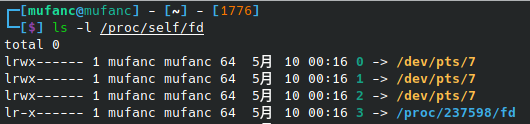
值得注意的是，/proc/self 实际上为指向当前进程 /proc/<pid> 目录的一个软链接，所以才会出现看似访问了 /proc/self/fd，实则打开了 /proc/237598/fd 的情况，与 Windows 中的快捷方式有一定相似之处
在设置波特率等参数之后，再次打开设备文件以应用新的参数，然后通过 epoll 注册监听器，当文件描述符变为可读时会产生一个事件，这样我们就可以对串口进行读取了
这两个函数的功能比较单一，read 方法接收一个参数 n， 在读取到 n 字节数据后返回；write 方法接收一个无符号字符类型的 vector，然后循环将数据写入串口
下面开始编写主程序，单片机连接到电脑之后会在 /dev 中映射一个 /dev/ttyUSB0 设备，只需要打开它并且读取 13 字节的数据（AA 55 与 11 字节的「序列号」）即可
main.cpp 1 2 3 4 5 6 7 8 9 10 11 12 13 14 15 #include <cstdio> #include "serial.h" int main () serial pipe ("/dev/ttyUSB0" , B4800) ; std::vector<uchar> response = pipe.read (13 ); for (auto ch : response) { printf ("%02X" , ch); } return 0 ; }
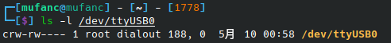
注意这里 /dev/ttyUSB0 的文件权限是 rw-rw----，所以我们在执行程序时需要切换到 root 用户才能正常读写设备
邪道速通
如果你的电脑恰好有 Python 环境，那么还有一种更简单的方式来完成这个实验，通过 pip install pyserial 完成串口读写模块的安装，然后使用下面的代码：
1 2 3 4 5 6 7 8 9 10 11 12 13 14 15 import serial.tools.list_portsfrom serial import Serialdevice = list (serial.tools.list_ports.comports()[0 ])[0 ] for baud in [1200 , 1800 , 2400 , 4800 , 9600 , 19200 , 38400 , 57600 , 115200 ]: print (f'Trying [{baud:>6d} ]: ' ) serial = Serial(device, baud, timeout=2 ) data = serial.read(13 ) if data[:2 ] == b'\xaa\x55' : print ('' .join(map (lambda ch: f'{ch:0 >2X} ' , data[2 :]))) break else : print ('failed.' ) serial.close()
显然，常用的波特率并不多，所以只需要枚举这些波特率，并判断读到的前两个字节是不是 AA 55 就行了，甚至不需要用到虚拟机
3.4 - 串口数据收发与测量
常规路线
按照惯例，还是先来讲讲常规路线，简单分析下需求，我这里把学习通上的描述整理了一下，整个实验过程大致分为 4 个步骤：
下载程序后，单片机将使用 1200 波特率发送自身序列号，格式同上一节课（3.3 节内容）相同，请记录下该序列号。
向串口写入自己的学号，格式为 0xAA 0x55 十二位学号数字，例如学号 202201100203，应该通过串口发送以下数据:
1 AA 55 02 00 02 02 00 01 01 00 00 02 00 03
STC 单片机接收到学号后会发送第一串密码，密码长度为 4 字节。例如，收到以下密码串：
1 AA 55 0A 00 00 00 00 00 00 C9 34 3F 5D
其中 AA 55 为前导串，0A 表示起始字节是第 10 字节，此时密码为 C9 34 3F 5D
请将解析出该串密码并原样发回给串口，STC 单品机收到返回后会继续发送下一串密码，请继续解析出该串密码并原样发回给串口……
以此往复，将收到的最后一串密码记录下来。
将学号、序列号、最后一串密码发送到课程后台，上送命令语法为：
1 curl "132.232.98.70:6363/checkSecret?id=学号&v=序列号&s=密码"
P.S. 这本质上就是给服务器发个 GET 请求，所以只需要复制 ip 地址及后面的部分粘贴到浏览器地址栏就行了
想用 C++ 直接发请求不是很方便，所以最后一步留着手动搞，让代码来帮我们完成前 3 步即可。继续使用上次的工程文件，然后将 main.cpp 修改成下面的内容：
main.cpp 1 2 3 4 5 6 7 8 9 10 11 12 13 14 15 16 17 18 19 20 21 22 23 24 25 26 27 28 29 30 31 32 33 34 35 36 37 38 39 40 41 42 43 44 45 46 47 48 49 50 #include <cstdio> #include <iostream> #include <string> #include "serial.h" std::string format (const std::vector<uchar> &data) { std::string str (2 * data.size() + 1 , '\x00' ) ; for (int i = 0 ; i < data.size (); i++) { sprintf (&str[i * 2 ], "%02X" , data[i]); } return str; } int main () printf ("> " ); std::string student; std::cin >> student; const std::vector<uchar> prefix = { 0xAA , 0x55 }; serial pipe ("/dev/ttyUSB0" , B1200) ; printf ("%s\n" , format(pipe.read (13 )).c_str ()); std::vector<uchar> data = prefix; for (char ch : student) { data.push_back (ch - '0' ); } pipe.write (data); for (int i = 0 ; i < 260 ; i++) { pipe.read (2 ); int position = pipe.read (1 )[0 ]; pipe.read (position - 4 ); data = pipe.read (4 ); std::string passwd = format(data); printf ("[%3d]: %s\r" , i, passwd.c_str ()); fflush (stdout); data.insert (data.begin (), prefix.begin (), prefix.end ()); pipe.write (data); } printf ("\n" ); return 0 ; }
运行程序后输入学号，便会自动开始串口通信过程并不断刷新「密码」的值，循环 260（> 256）次后自动停止，代码相较上次实验而言只是改变了输入输出逻辑，并没有用到什么新的技术，在这里就不做过多解析了
邪道速通
还是熟悉的 Python，这次顺便装上 httpx 模块，循环足够次数后直接向服务器发起 GET 请求，真正做到「一键实验」：
1 2 3 4 5 6 7 8 9 10 11 12 13 14 15 16 17 18 19 20 21 22 23 24 25 26 27 28 29 30 31 import httpximport serial.tools.list_portsfrom serial import Serialstudent = input ('学号：' ) def bytes2string (_data ): return '' .join([f'{ch:0 >2X} ' for ch in _data]) data = b'\xaa\x55' + bytes ([ord (ch) - ord ('0' ) for ch in student]) pipe = Serial(list (serial.tools.list_ports.comports()[0 ])[0 ], 1200 ) serial, passwd = bytes2string(pipe.read(13 )[2 :]), None print (f'序列号：{serial} ' )pipe.write(data) for i in range (260 ): pipe.read(2 ) distance = list (pipe.read(1 ))[0 ] pipe.read(distance - 4 ) passwd = pipe.read(4 ) data = bytes2string(passwd) print (f'[{i:>3d} ]: {data} ' , end='\r' ) pipe.write(b'\xaa\x55' + passwd) print ('\n' )resp = httpx.get(f'http://132.232.98.70:6363/checkSecret?id={student} &s={data} &v={serial} ' ) print (f'已提交至服务器，有效成绩：{resp.text} ' )
3.6 - RS485 信号的测量
常规路线
首先测得 A 板的波特率和序列号并记录，然后拨动 B 板摇杆，直至示波器测得的波特率与 A 板波特率一致，编写 Python 代码：
1 2 3 4 5 6 7 8 9 10 11 12 13 14 15 16 17 18 19 20 21 22 23 24 25 import httpxfrom serial.tools import list_portsfrom serial import Serialdef bytes2string (_data ): return '' .join([f'{ch:0 >2X} ' for ch in _data]) def string2bytes (_data ): arr = [] for i in range (0 , len (_data), 2 ): arr.append(int (_data[i:i+2 ], 16 )) return bytes (arr) student = input ('学号：' ) baud = input ('波特率：' ) serial = string2bytes(input ('序列号：' )) data = b'\xaa\x55' + serial + bytes ([ord (ch) - ord ('0' ) for ch in student]) pipe = Serial(list (list_ports.comports()[0 ])[0 ], baud) pipe.write(data) print (f'密码：{bytes2string(pipe.read(6 )[2 :])} ' )
按照提示输入相应信息即可获得「密码」，向服务器提交即可
邪道速通
这次实验想要邪道速通稍微有些难度，首先想到一个比较猥琐的办法是暴力枚举波特率，将 A、B 板子按序连接好，然后使用下面的 Python 脚本：
1 2 3 4 5 6 7 8 9 10 11 12 13 14 15 16 17 18 19 20 21 22 23 24 25 26 27 28 29 30 31 32 33 34 35 36 37 38 39 40 41 42 43 44 45 46 47 48 49 50 51 import httpxfrom serial.tools import list_portsfrom serial import Serialdef bytes2string (data ): return '' .join([f'{ch:0 >2X} ' for ch in data]) def detect_baud_rate (): def internal (): device = list (list_ports.comports()[0 ])[0 ] for baud in [1200 , 1800 , 2400 , 4800 , 9600 , 19200 , 38400 , 57600 , 115200 ]: print (f'Trying [{baud:>6d} ]...' , end='\r' ) serial = Serial(device, baud, timeout=1 ) data = serial.read(6 ) if data[:2 ] == b'\xaa\x55' : return data[2 :], baud serial.close() return None , None while True : serial, baud = internal() if serial: print ('' ) return serial, baud print ('请调节 B 板波特率，然后再试一次！' , end='\r' ) input () def main (): serial, baud = detect_baud_rate() print (f'序列号: {bytes2string(serial)} , 波特率：{baud} ' ) student = input ('学号：' ) data = b'\xaa\x55' + serial + bytes ([ord (ch) - ord ('0' ) for ch in student]) pipe = Serial(list (list_ports.comports()[0 ])[0 ], baud) pipe.write(data) passwd = bytes2string(pipe.read(6 )[2 :]) print (f'密码：{passwd} ' ) resp = httpx.get(f'http://132.232.98.70:6363/check485?id={student} &v={bytes2string(serial)} &s={passwd} ' ) print (f'已提交至服务器，返回信息：{resp.text} ' ) if __name__ == '__main__' : main()
经测试当输入的序列号不正确时 A 板不会有回应，故无法在只操作 B 板改变其波特率的情况下自动探测出 A 板的波特率，只能通过不断手动点按 K3 迫使 A 板发出串口信号，多少有些不够优雅。
但为什么一定要用到板子呢？如果我们能够直接生成出一组合法的密码和序列号信息，那么便可以摆脱板子的依赖，迅速完成实验。
破译过程
随便喂几组学号进去找找规律，不难发现「密码」所有位取异或与「序列号」所有位取异或得到的数是相同的。下面开始分析，首先定义几个工具函数：
bytes2string(data) 用于将 bytes 转换为十六进制字符串
string2bytes(string) 上述过程的逆
encode 将纯数字字符串编码为 bytes，如 encode('1234') 为 b'\x01\x02\x03\x04'
事先测好一张 A 板的参数，然后编写串口读写及转换函数：
1 2 3 4 5 6 7 def get_passwd (student ): data = b'\xaa\x55' + string2bytes('B3224BF4' ) + encode(student) pipe = Serial(list (list_ports.comports()[0 ])[0 ], 1200 ) pipe.write(data) data = pipe.read(6 ) assert data[:2 ] == b'\xaa\x55' return bytes2string(data[2 :])
做一些简单的测试，发现前 9 字节对「密码」没有任何影响，修改掉前 9 位也不影响提交：
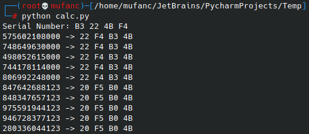
从提交 url 上也能看出这一点，当输入的 id 小于 3 个字符时，返回 Internal Server Error；而大于 3 个字符时，任意修改前面的字符不会对结果造成影响：
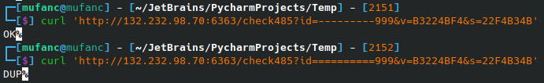
由上面提到过的「XOR 不变性」，选取 1 - 7 的二进制形式再次测试：
1 2 3 4 print ('Serial Number: B3 22 4B F4' )for i in range (8 ): student = f'{i:0 >3b} ' print (f'{" " .join(student)} -> {get_passwd("000000000" + student)} ' )
设序列号为 S 0 S_0 S 0 S 3 S_3 S 3 D 0 D_0 D 0 D 2 D_2 D 2 P 0 P_0 P 0 P 3 P_3 P 3
D0
D1
D2
P0
P1
P2
P3
0
0
0
->
22
F4
B3
4B
0
0
1
->
23 F5 B3
4B
0
1
0
->
22
F5 B2 4B
0
1
1
->
23 F4
B2 4B
1
0
0
->
23 F4
B2 4B
1
0
1
->
22
F5 B2 4B
1
1
0
->
23 F5 B3
4B
1
1
1
->
22
F4
B3
4B
观察可得 P3 = S2，P0 = S0 ^ D0 ^ D2，P1 = S0 ^ D1 ^ D2，P2 = S0 ^ D0 ^ D1
最终得到以下代码，运行以后直接输入学号即可：
加密逻辑疑似被工训改了，下面代码可能会返回 NOK，研究中……
1 2 3 4 5 6 7 8 9 10 11 12 13 14 15 16 17 18 19 20 21 22 23 24 25 26 27 28 29 30 31 32 33 34 35 36 37 38 39 40 41 42 import httpxfrom random import randintdef bytes2string (data ): return '' .join([f'{ch:0 >2X} ' for ch in data]) def encode (data ): return bytes ([ord (ch) - ord ('0' ) for ch in data]) def main (): serial = bytes (randint(0 , 255 ) for _ in range (4 )) print (f'序列号：{bytes2string(serial)} ' ) student = input ('学号：' ) data = encode(student[-3 :]) passwd = [0 ] * 4 passwd[0 ] = serial[1 ] ^ data[0 ] ^ data[2 ] passwd[1 ] = serial[3 ] ^ data[1 ] ^ data[2 ] passwd[2 ] = serial[0 ] ^ data[0 ] ^ data[1 ] passwd[3 ] = serial[2 ] passwd = bytes2string(passwd) print (f'密码：{passwd} ' ) resp = httpx.get( f'http://132.232.98.70:6363/check485' , params={ 'id' : student, 'v' : bytes2string(serial), 's' : passwd } ) print (f'已提交至服务器，返回信息：{resp.text} ' ) if __name__ == '__main__' : main()
3.7 - RS485 总线数据收发
常规路线
本次实验中 B 板只起到一个转发器的作用，整体实现逻辑与 3.4 节非常相似。值得注意的是，在第三点要求中 A 板不再告诉我们需要接收的数据量：
A 板单片机接收到学号后会每 300ms 发送第一串密码，密码长度为 4 字节。请将解析出该串密码并在 150ms 内原样发回给串口。STC 单品机收到返回后会继续发送下一串密码，请继续解析出该串密码并在 150ms 内原样发回给串口。以此往复，将收到的最后一串密码记录下来。
例如，收到以下密码串
1 AA 55 00 00 00 00 00 C9 34 3F 5D
其中 AA 55 为前导串，最后 4 个字节是密码，请将密码原样发回给串口。
所以这一次使用非阻塞的 read_all() 函数来读取串口数据，从第一次读到非空数据时开始记录，直到再次读到空数据，将已经读到的部分存入缓冲，buffer 的最后 4 个字节就是「密码」：
1 2 3 4 5 6 7 8 9 10 11 12 13 14 15 16 17 18 19 20 21 22 23 24 25 26 27 28 29 30 31 32 33 34 35 36 37 38 39 40 41 42 43 44 45 46 47 48 import httpximport serial.tools.list_portsfrom serial import Serialfrom time import sleepprefix, student = b'\xAA\x55' , input ('学号：' ) def bytes2string (_data ): return '' .join([f'{ch:0 >2X} ' for ch in _data]) pipe = Serial(list (serial.tools.list_ports.comports()[0 ])[0 ], 1200 ) data, passwd = pipe.read(6 ), None assert data.startswith(prefix)serial = bytes2string(data[2 :]) print (f'序列号：{serial} ' )pipe.write(prefix + bytes ([ord (ch) - ord ('0' ) for ch in student])) count = 0 buffer, history = [], ['' ] * 5 while True : sleep(0.05 ) data = pipe.read_all() if data: buffer.extend(data) continue data = bytes (buffer) if data.startswith(prefix): passwd = data[-4 :] count += 1 print (f'[{count:>3d} ]: {bytes2string(passwd)} ' , end='\r' ) pipe.write(prefix + passwd) history = history[1 :] + [bytes2string(passwd)] if history.count(history[0 ]) == len (history): break buffer.clear() print ('\n' )resp = httpx.get(f'http://132.232.98.70:6363/check485Secret?id={student} &s={bytes2string(passwd)} &v={serial} ' ) print (f'已提交至服务器，有效成绩：{resp.text} ' )
这段 Python 代码已经能达到 256 的最高迭代次数且足够简便，故不再提供邪道速通（其实是老师一分钟改完的算法我可能得花几个小时重新逆向 ）。最后再附上一份 C++ 版本的代码：
main.cpp 1 2 3 4 5 6 7 8 9 10 11 12 13 14 15 16 17 18 19 20 21 22 23 24 25 26 27 28 29 30 31 32 33 34 35 36 37 38 39 40 41 42 43 44 45 46 47 48 49 50 51 52 53 54 55 56 57 58 59 #include <cstdio> #include <iostream> #include <string> #include <thread> #include "serial.h" std::string format (const std::vector<uchar> &data) { std::string str (2 * data.size() + 1 , '\x00' ) ; for (int i = 0 ; i < data.size (); i++) { sprintf (&str[i * 2 ], "%02X" , data[i]); } return str; } int main () printf ("> " ); std::string student; std::cin >> student; const std::vector<uchar> prefix = { 0xAA , 0x55 }; serial pipe ("/dev/ttyUSB0" , B1200) ; printf ("%s\n" , format(pipe.read (6 )).substr (4 ).c_str ()); fflush (stdout); std::vector<uchar> data = prefix; for (char ch : student) { data.push_back (ch - '0' ); } pipe.write (data); std::vector<uchar> buffer; for (int count = 0 ; count < 270 ; ) { std::this_thread::sleep_for (std::chrono::milliseconds (50 )); data = pipe.read_all (); if (!data.empty ()) { buffer.insert (buffer.end (), data.begin (), data.end ()); continue ; } if (buffer.size () >= 6 && buffer[0 ] == prefix[0 ] && buffer[1 ] == prefix[1 ]) { std::vector<uchar> passwd (&buffer[buffer.size() - 4 ], &buffer[buffer.size()]) ; count++; printf ("[%3d]: %s\r" , count, format(passwd).c_str ()); passwd.insert (passwd.begin (), prefix.begin (), prefix.end ()); pipe.write (passwd); } buffer.clear (); fflush (stdout); } printf ("\n" ); return 0 ; }
以及新增的 read_all() 函数实现：
serial.cpp 1 2 3 4 5 6 7 8 9 10 11 12 13 14 15 16 17 18 std::vector<uchar> serial::read_all () const { epoll_event event {}; epoll_wait (epfd, &event, 1 , 0 ); if (event.data.fd) { std::vector<uchar> data; uchar buffer[128 ]; size_t count; do { count = ::read (event.data.fd, buffer, 128 ); data.insert (data.end (), buffer, buffer + count); } while (count == 128 ); return data; } return {}; }